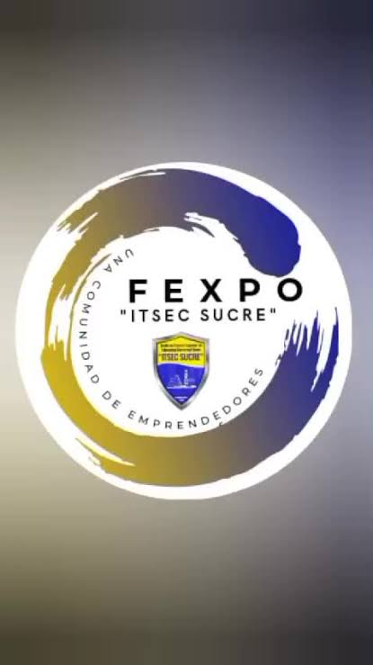
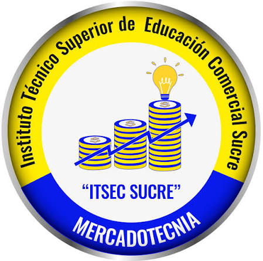
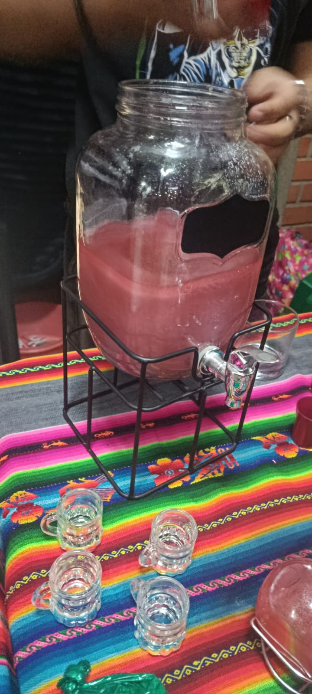
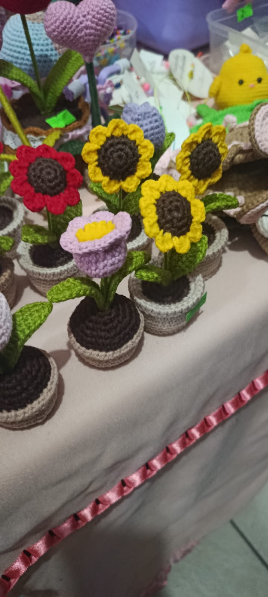
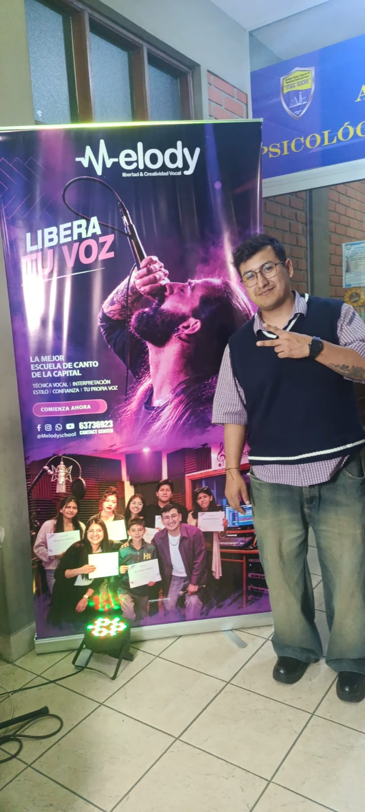

FEXPO ITSEC Sucre 2026
Una Comunidad de Emprendedores
El conocimiento es la llave que abre las puertas del futuro. En la educación superior, cada paso que das te acerca más a tus sueños y metas.
Conocer nuestros emprendimientos
Sobre ITSEC Sucre
El Instituto Técnico Superior de Educación Comercial Sucre (ITSEC), fundado en 1985, es una institución de educación superior ubicada en la ciudad de Sucre, Bolivia. Formamos profesionales técnicos con valores, capacidad emprendedora y compromiso con el desarrollo de nuestra región.
Esta feria presenta los emprendimientos reales de nuestros estudiantes, organizados en 5 nichos con 2 emprendimientos cada uno. Descubre la creatividad, el esfuerzo y la innovación de nuestra comunidad estudiantil.
Nuestras Carreras

MercadotecniaGastronomía
Emprendimientos dedicados a la preparación de alimentos y bebidas artesanales.

Pollos DeliMar's
Pollo frito artesanal con receta propia. Un emprendimiento gastronómico apoyado por Food for the Hungry Bolivia.
Conocer más
Dead Leaf
Bebidas y productos naturales artesanales con variedad de sabores. Cel: 71443926.
Conocer másBienes Raíces y Turismo
Inversiones inmobiliarias y proyectos turísticos que transforman Bolivia.

Kalomai Park
El parque acuático más grande de Bolivia. "La Joya Vacacional" con atracciones para toda la familia.
Conocer más
Grupo Sion
Inversiones inmobiliarias, terrenos y membresías. Presente en FEXPO Sucre 2026 con proyectos como La Arboleda del Este.
Conocer másArtesanía
Productos hechos a mano con creatividad, dedicación y amor por el detalle.

Sondogita - Joyería Artesanal
Aretes, collares y anillos hechos a mano con amor. Cada pieza es única. @SONDOGITA
Conocer más
Flores y Tejidos a Crochet
Rosas, tulipanes, girasoles y lirios tejidos a mano. Arte floral que nunca se marchita.
Conocer másModa y Belleza
Emprendimientos de moda, ropa y productos de belleza para verse y sentirse bien.

Moda y Ropa
Venta de jeans, ropa casual y prendas de moda para todos los estilos y ocasiones.
Conocer más
Belleza y Cosméticos
Lip gloss, paletas de maquillaje, perfumes y productos de belleza para realzar tu estilo.
Conocer másServicios y Entretenimiento
Servicios creativos que llenan de alegría y talento cada evento.

Melody - Escuela de Canto
"Libera Tu Voz" - Escuela de canto con clases personalizadas. @Melodyschool | Cel: 63736923
Conocer más
Florería Charito
Arreglos florales para todo tipo de ocasión. Atención 24 hrs. Cel: 71155749 - 71159262
Conocer más